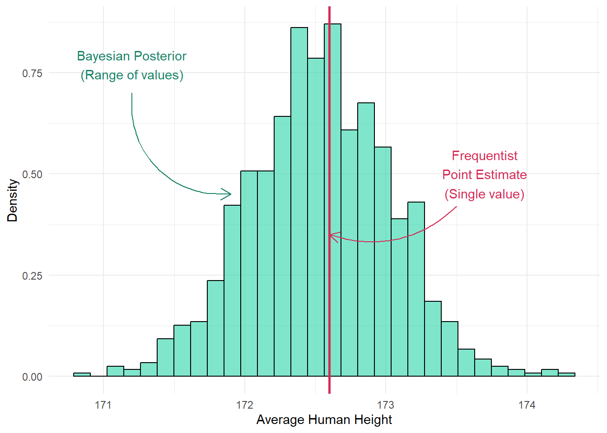
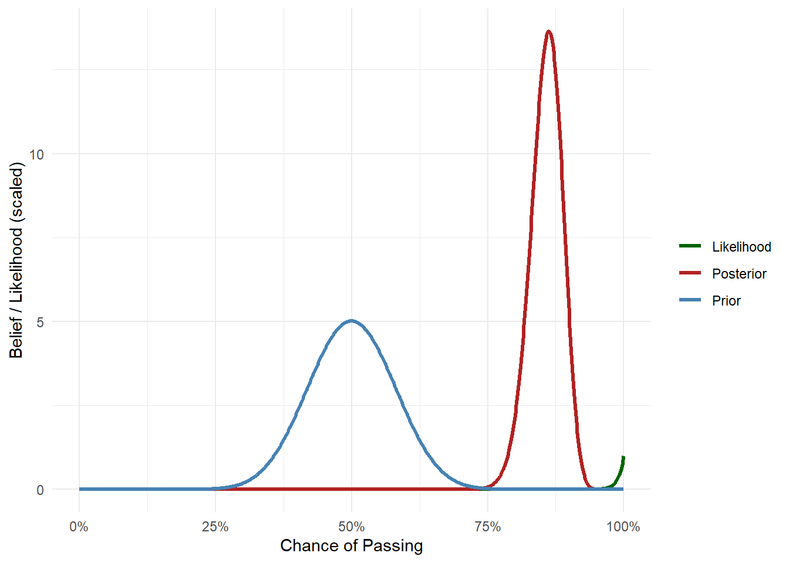
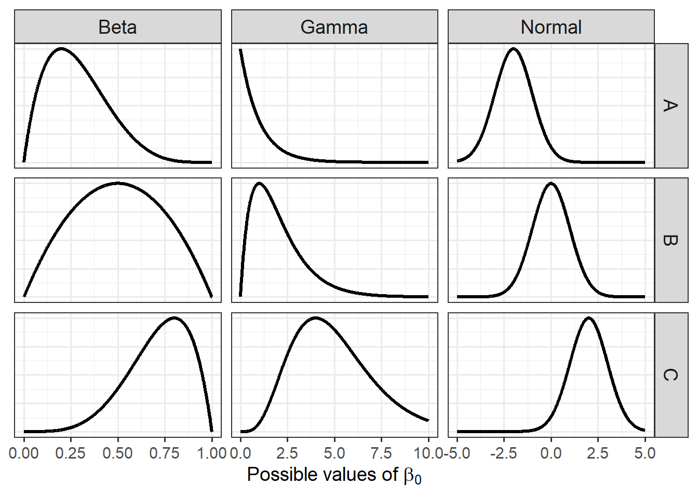

Most of the statistics you’ve probably learned so far has been based in what’s called frequentist statistics. The analysis you’ll be using for occupancy models (at least this particular implementation) will be using something called Bayesian statistics (pronounced “Bay-zee-’n”). These are the two statistical frameworks currently used to gather evidence, to answer a question, from data (unless you want to start splitting philosophical hairs). Within this document we’re going to start with what Bayesian statistics is, how to move from frequentist to Bayesian statistics, and how a Bayesian model works. We’ll leave occupancy models to the side for the time being.
Given you probably didn’t know you were even using a statistical framework before this (I didn’t really mention this in BI3010), it’s worth going over what frequentist statistics is, before I explain the alternative.
Almost every quantitative scientist understands statistics under the frequentist framework. That’s not because it’s philosophically better or has a cleaner underlying logic or that scientists have developed an understanding of both frequentist and Bayesian frameworks, carefully considered which is more appropriate for their purposes and made a principled decision to use frequentist statistics. It’s because that’s what they were taught. They were taught frequentist stats and that’s what they now use. As simple as that. Across the quantitative sciences, this has led to frequentist methods becoming the default framework.
So what is frequentist statistics?
Frequentist statistics is based on the idea that each model parameter has a singular, fixed, true value but are unknown. For example, let’s say the average human height is exactly 172.3452 cm. Clearly we can’t just directly measure this exact true value (how do we directly measure the average human height?), so instead, in frequentist statistics, we assume we can estimate it by collecting height data from lots of individuals. The more data we gather, especially as the sample size approaches infinite, the more accurate our estimate would be (i.e. the closer we’ll get to the elusive “True” value).
Underlying the frequentist framework is the concept of long-run frequency. Frequentist methods tend to ask: if we repeated an experiment over and over, how often would we get a result as “extreme” as the one we observed? It doesn’t assign probabilities to hypotheses or parameters, only to the data we might observe under certain assumptions.
This long-run frequency is what underpins P-values and 95% confidence intervals. P-values represent the probability of observing data as extreme as we did, assuming the null hypothesis is true. For example, what’s the probability that we would estimate average human height as 100.001 cm, if the true average was actually 172.3452 cm?
Confidence intervals work similarly. A 95% CI means that, if we repeated our experiment many times, 95% of the intervalsthat are calculated would contain the true parameter. It does not mean there is a 95% chance the interval from a single study contains the true value. For example, if we could repeat our sampling for average human height 100 times, then 95 of the intervals we calculate would contain the true value of 172.3452 cm.
It’s important to emphasize that there’s nothing inherently wrong with frequentist statistics. The challenges often arise because frequentist methods are more commonly taught and used, especially by researchers who may not have a strong background in statistics. This is often due to institutional factors: limited training; time pressures; or a tendency to treat statistics as a box to tick rather than a tool that is central to science. As a result, some of the weakest research tends to rely on frequentist methods, not because the methods themselves are flawed, but because they are more widely used. The root issue is rarely statistical; it’s institutional and educational.
So what is Bayesian statistics?
Bayesian statistics starts from a different premise: instead of treating unknown values (like the average human height) as fixed but unknown (but can be known with enough data), Bayesian treats parameters as being inherently uncertain, that won’t ever become known. Technically, these uncertain quantities are called random variables. Rather than assuming we will eventually learn the true value, we use probability to express how strongly we believe in different possible values for the parameter (e.g. average human height).
So instead of having a single point estimate from a frequentist model (i.e. the parameter estimate), a Bayesian model returns a multiple of different values for the parameter, as a distribution of possible values. The more likely a particular value is, then the more belief we have in it.
Code
library(ggplot2)library(dplyr)
Attaching package: 'dplyr'
The following objects are masked from 'package:stats':
filter, lag
The following objects are masked from 'package:base':
intersect, setdiff, setequal, union
Code
set.seed(42)posterior_samples <-rnorm(1000, mean =172.55, sd =0.5)posterior_df <-data.frame(value = posterior_samples)frequentist_est <-172.6frequentist_ci <-c(171.9, 173.5)bayes_ci <-quantile(posterior_samples, probs =c(0.025, 0.975))ggplot(posterior_df, aes(x = value)) +geom_histogram(aes(y = ..density..), bins =30, fill ="#2AD5AA", alpha =0.6, color ="black") +geom_vline(xintercept = frequentist_est, color ="#D52A55", linetype ="solid", size =1) +annotate("text", x =173.7, y =0.5, label ="Frequentist\nPoint Estimate\n(Single value)", color ="#D52A55") +annotate("text", x =171.2, y =0.77, label ="Bayesian Posterior\n(Range of values)", color ="#198267") +annotate("curve", x =171.2, xend =171.9, y =0.7, yend =0.45,curvature =0.5, arrow =arrow(length =unit(0.03, "npc")), color ="#198267") +annotate("curve", x =173.5, xend = frequentist_est, y =0.42, yend =0.35,curvature =-0.3, arrow =arrow(length =unit(0.03, "npc")), color ="#D52A55") +labs(x ="Average Human Height",y ="Density" ) +theme_minimal()
Warning: Using `size` aesthetic for lines was deprecated in ggplot2 3.4.0.
ℹ Please use `linewidth` instead.
Warning: The dot-dot notation (`..density..`) was deprecated in ggplot2 3.4.0.
ℹ Please use `after_stat(density)` instead.

Imagine we fit the following model:
\[y_i \sim Normal(\mu_i, \sigma^2)\]
\[\mu_i = \beta_0\]
In a frequentist model, \(\beta_0\) would be estimated as a single value (since frequentists assume there’s one fixed true value). In contrast, the equivalent Bayesian model would give a full distribution for \(\beta_0\), representing a range of possible values with different levels of support.
One of the defining features of Bayesian statistics is that it allows us to incorporate prior beliefs, that is, what we already think or know about a parameter before seeing the data.
Incorporating Prior Belief
Suppose I asked you: “What do you think your chances are of passing your thesis?” You might be pessimistic and say: “Something like 50%”. That’s your prior; your belief based on your knowledge about about yourself without ever having seen any data.
Now imagine I told you that I’ve supervised 100 students before, and every single one of them passed? That’s new data and it’s strong evidence that the pass rate is high, probably very close to 100%. In Bayesian terms, this data has a likelihood, which tells us how plausible different pass rates are, given what we’ve observed. Is it likely that the true pass rate is 0%, if all 100 students passed? Clearly not. What about 75%? That seems possible, but it doesn’t explain the data super well. A pass rate of 100%? That seems highly consistent with what we observed.
With this new information, you’d probably update your belief and maybe revise your pass rate estimate up to, say, 80%. It’s still not 100% because you haven’t forgotten your initial guess; a 50% chance to pass. But you’re also not ignoring the fact that 100 students passed, and that 100% seems like a pretty likely pass rate. Your new revised 80% chance of passing is your posterior.
That’s the Bayesian framework: start with a prior belief, then update it with data to form a posterior belief, which represents an entire distribution of feasible parameter values.
Bayes Theorem
The equation you may well see whenever you look up Bayesian statistics is Bayes’ Theorem, which is some version of:
\(P(Parameters | Data)\) is the posterior. In the above thesis grade example, this is the 80% probability to pass, given you thought you had a 50% chance to pass but also that 100 students all passed. The “parameter” here is your estimated pass rate and the data comes from all the previous students.
\(P(Parameters)\) is the prior. Your belief of what the parameter value is before seeing the data. In the thesis example, this is your belief that you have a 50% chance of passing.
\(P(Data | Parameters)\) is the likelihood, which is a measure of how likely the data is, given the parameter values. In the above example, this is informed by 100 out of 100 of students passing, and a 100% pass rate seeming most plausible in that case.
\(P(Data)\) is the evidence (also called the marginal likelihood). It’s a normalising constant; it ensures the posterior distribution is properly scaled so that all probabilities sum to 1 (or 100%). Conceptually, it represents how likely the observed data is (100 passing students), averaged across all possible parameter values (from 0% to 100% pass rates).
You’d never include Bayes theorem in your thesis but it’s useful to know, especially when you want to start thinking a bit more deeply about Bayesian statistics.
Visualising Bayes
Let’s now add some visual intuition to the thesis pass example using simple figures. Imagine we want to visualise your belief as a curve that shows how likely you think different pass rates are.
Your Prior Belief
You start off thinking you have a 50% chance of passing. That doesn’t mean you’re certain that it’s exactly 50%. You might be unsure, so you’re open to the idea that it could be lower or higher.
Your prior might look like this:
Code
theta <-seq(0, 1, length.out =1000)prior <-dbeta(theta, 20, 20)data.frame(theta, prior) |>ggplot(aes(x = theta, y = prior)) +geom_line(color ="steelblue", size =1.2) +scale_x_continuous(labels = scales::percent) +labs(x ="Chance of Passing", y ="Belief Density") +theme_minimal()
The Likelihood
Now you find out that 100 students have done their thesis before you, and all of them passed. That’s really strong evidence that the pass rate is high, probably very near to 100%.
We can visualise how likely the observed data is for different values of the pass rate, this is the likelihood.
Code
likelihood <- theta^100likelihood <- likelihood /max(likelihood)data.frame(theta, likelihood) |>ggplot(aes(x = theta, y = likelihood)) +geom_line(color ="darkgreen", size =1.2) +scale_x_continuous(labels = scales::percent) +labs(x ="Chance of Passing", y ="Likelihood (scaled)") +theme_minimal()
In Bayesian terms, this evidence updates your belief.
The Posterior
Your updated belief, the posterior, combines your initial guess of roughly 50% with the strong evidence we have from 100 students. The resulting curve now shifts to the right; it’s taller near 85%-90% but still not at 100%, because you haven’t thrown out your original uncertainty.
Code
posterior <-dbeta(theta, 120, 20)posterior_df <-data.frame(theta =rep(theta, 3),density =c(prior, likelihood, posterior),belief =rep(c("Prior", "Likelihood", "Posterior"), each =length(theta)))posterior_df |>ggplot(aes(x = theta, y = density, color = belief)) +geom_line(size =1.2) +labs(x ="Chance of Passing", y ="Belief / Likelihood (scaled)", colour ="") +scale_x_continuous(labels = scales::percent) +theme_minimal() +scale_color_manual(values =c("darkgreen", "firebrick", "steelblue"))

Your posterior is more-or-less the multiplication of your prior belief with the likelihood (\(P(Data | Parameters)\times P(Parameters)\)). In this case, giving you a happy middle ground of ca. 85% chance to pass.
This is how Bayesian statistics works in practice:
Start with a belief (or hypothesis).
See some evidence (i.e. collect some data).
Update your belief accordingly.
In short, this is kinda the scientific method, isn’t it? (pls don’t tell any frequentists that I said that…)
Bayesian models
The above example is cute and all but how does this translate into an actual model? For instance, what about the model we started off with in the very first document:
\[
y_i \sim Bernoulli(p_i) \\
\]
\[
logit(p_i) = \beta_0
\]
How do we make this Bayesian?
Well, with surprisingly little change. All we need to do is add a prior for each parameter in the model. Here, the only parameter we have is \(\beta_0\). The challenge is; how do we define our belief in numbers?
This is where statistical distributions, like the \(Normal\) distribution, become insanely useful. Distributions allow us to define a range of values at differing frequencies. For example, in the thesis example, when we specified the range of pass rates we thought might be reasonable:
Code
theta <-seq(0, 1, length.out =1000)prior <-dbeta(theta, 20, 20)data.frame(theta, prior) |>ggplot(aes(x = theta, y = prior)) +geom_line(color ="steelblue", size =1.2) +scale_x_continuous(labels = scales::percent) +labs(x ="Chance of Passing", y ="Belief Density") +theme_minimal()
This was done using a distribution. Specifically, we used a \(Beta\) distribution with the “technical details” set such that it looked like the above, but we can change the distribution and values to anything we want.
So for our equation:
\[
y_i \sim Bernoulli(p_i) \\
\]
\[
logit(p_i) = \beta_0
\]
We just need to specify what we think \(\beta_0\) will be using a distribution, which could be whatever we want. If we’re not very confident, then we can make the distribution wider (so more values are considered feasible). If we think the minimum or maximum will be 0 or 1, then we can choose a distribution that will stay within those bounds. If we really have no idea at all, then we can use a distribution that conveys that.
Here are a handful are randomly chosen distributions you could pick from to use as a prior for anything:
Code
library(tidyr)x_beta <-seq(0, 1, length.out =1000)x_normal <-seq(-5, 5, length.out =1000)x_gamma <-seq(0, 10, length.out =1000)normalize <-function(y) y /max(y)beta_df <-bind_rows(tibble(x = x_beta, density =normalize(dbeta(x_beta, 2, 5)), Distribution ="Beta", Variant ="A"),tibble(x = x_beta, density =normalize(dbeta(x_beta, 2, 2)), Distribution ="Beta", Variant ="B"),tibble(x = x_beta, density =normalize(dbeta(x_beta, 5, 2)), Distribution ="Beta", Variant ="C"))normal_df <-bind_rows(tibble(x = x_normal, density =normalize(dnorm(x_normal, -2, 1)), Distribution ="Normal", Variant ="A"),tibble(x = x_normal, density =normalize(dnorm(x_normal, 0, 1)), Distribution ="Normal", Variant ="B"),tibble(x = x_normal, density =normalize(dnorm(x_normal, 2, 1)), Distribution ="Normal", Variant ="C"))gamma_df <-bind_rows(tibble(x = x_gamma, density =normalize(dgamma(x_gamma, shape =1, rate =1)), Distribution ="Gamma", Variant ="A"),tibble(x = x_gamma, density =normalize(dgamma(x_gamma, shape =2, rate =1)), Distribution ="Gamma", Variant ="B"),tibble(x = x_gamma, density =normalize(dgamma(x_gamma, shape =5, rate =1)), Distribution ="Gamma", Variant ="C"))df <-bind_rows(beta_df, normal_df, gamma_df)ggplot(df, aes(x = x, y = density)) +geom_line(size =1.1) +facet_grid(cols =vars(Distribution), rows =vars(Variant), scales ="free_x") +labs(x =expression("Possible values of "* beta[0]),y =NULL ) +theme_bw(base_size =14) +theme(axis.text.y =element_blank(),axis.ticks.y =element_blank(),strip.text =element_text(size =14) )

Going back to our model, let’s say I think the value for \(\beta_0\) is likely:
probably less than one
can’t go below zero
a value close to zero is most likely.
In that case, from the above figure of distributions, I might want to use the top Gamma distribution given that matches my requirements most closely.
The unimportant technical details of that specific Gamma distribution is that it uses a value of 1 for “shape” and 1 for “rate”, or \(Gamma(1,1)\).
If I used this as my prior for \(\beta_0\), then my equation would be:
\[
y_i \sim Bernoulli(p_i) \\
\]
\[
logit(p_i) = \beta_0
\]
\[
\beta_0 \sim Gamma(1,1)
\]
Which is to say that my guess is that \(\beta_0\) will be probably be somewhere in the distribution of values specified by \(Gamma(1,1)\).
And that’s it. We now have a Bayesian model, with a prior specified for the only parameter in the model, \(\beta_0\). As a consequence of adding that one little prior, our entire statistical and scientific philosophy has changed.
So the only real Bayesian thing we need to do when running Bayesian analysis is to specify a prior that captures our prior belief. There are also technical changes, but those are changes to the machinery not statistical philosophy.
The challenge, however, is that you will (very likely) only know a handful of distributions and won’t know their intricate details. That’s why I created a website called, creatively, Distributions. If you go to this site, you can play around with different distributions to, hopefully, find the right one that captures your prior belief, without getting bogged down in details.
As a slight tangent, you can (kind of incorrectly) think of a frequentist model as being the equivalent to a Bayesian model except where they use the most impossibly, insanely vague guesses for priors. For instance, the above model would be (kind of) similar to:
\[ y_i \sim Bernoulli(p_i) \]
\[ logit(p_i) = \beta_0 \]
\[ \beta_0 \sim Uniform(-\infty,\infty)\]
Which is like saying, “the parameter \(\beta_0\) is probably somewhere between negative infinity and positive infinity and I completely refuse to say anything else”.
What’s a sensible prior?
Choosing the “correct” prior is often where people get nervous when using Bayesian statistics. There is some justification to this, in certain circumstances. For example, imagine you’re testing whether switching the color of a “Donate” button on a website from blue to green increases donations. If you only have data from 20 website visitors, any effect is likely going to be very small and noisy. If you apply a strong prior (e.g., blue buttons increase donations by $500 \(\pm \$10\) ), that prior could overwhelm the limited data and weak effect, and your posterior will end up looking a lot like your prior.
Putting such scenarios to the side, in general you’re probably better at choosing a prior than you might think. Consider the following model of baby height as they age from zero to five years old:
\[ height_i \sim Normal(\mu_i, \sigma^2) \]
\[ \mu_i = \beta_0 + \beta_1 \times Age_i \]
Where:
\(height\) is the height in cm of baby \(i\)
\(\beta_0\) is the intercept (i.e. height when age is zero)
\(\beta_0\) is the growth rate (i.e. for every additional year of age, how much does a baby grow)
I’m willing to bet you don’t have a baby, but I’m also willing to bet you could make reasonable guesses at what \(\beta_0\) and \(\beta_1\) would be.
How tall do you think a new born baby is? I don’t know but there are bits of surrounding information that I am sure of.
It won’t be negative. That much is hopefully obvious (a baby won’t be -5 cm tall at birth).
It will probably be taller than, like, 20 cm.
It probably won’t be more than 80 cm.
These pieces of information can help me to get the right sort of prior. If I head over to Distributions I can now shop around and find a distribution to match my expectations.
There’s another way I can create and refine my prior. By using existing literature. I can do a quick search online for any papers that have estimated new born height and growth rates in the past. If there are, that’s a gold mine for creating an informed prior! I won’t need to make educated guesses, I’ll have papers that tell me what a reasonable prior is.
Playing around, I might settle on a \(Gamma\) distribution which looks something like:
Here our slope (i.e. growth rate) prior uses a log-Normal distribution, specifically: \(LN(2,0.3)\).
So our Bayesian model is now:
\[ height_i \sim Normal(\mu_i, \sigma^2) \]
\[ \mu_i = \beta_0 + \beta_1 \times Age_i \]
\[\beta_0 \sim Gamma(22,0.5)\]
\[\beta_1 \sim LN(2,0.3)\]
However, if you’re ever really stuck and don’t have any idea of what a sensible prior would be, you can use something called an “uninformative prior”. Often, some version of \(Uniform(min, max)\), which could look like:
Which basically says, I don’t know what baby growth rate is, but it’s probably between -100 and 100 cm per year. You can always change the values to e.g. \(Uniform(-1, 1)\) or \(Uniform(0,1)\). The important part is that the \(Uniform\) distribution does not have a peak, a region where you think some values are more likely than others. In the above figure, I’m saying that baby growth rate could be anywhere from -100 to 100 with equal probability.
What’s next?
That’s the theory of the Bayesian framework and Bayesian statistics. Relative to frequentist statistics, all we’ve done here is just add our prior belief into the model. But that “small” act has led to a fairly radical change in our statistical philoshophy.
In practice there are technical differences as well, in terms of how we estimate the posterior, but we’ll cover that in the next document.